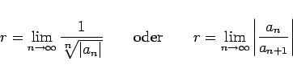
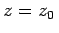
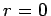
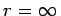
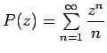

Inhalt Index DeskTop Bronstein

 Funktionentheorie Potenzreihenentwicklung analytischer Funktionen Konvergenz von Reihen mit komplexen Gliedern Potenzreihen im Komplexen
Funktionentheorie Potenzreihenentwicklung analytischer Funktionen Konvergenz von Reihen mit komplexen Gliedern Potenzreihen im Komplexen


Die Grenze zwischen dem Konvergenzbereich und dem Divergenzbereich einer Potenzreihe ist ein eindeutig bestimmter Kreis, der Konvergenzkreis. Man bestimmt seinen Radius wie im Reellen, falls die Grenzwerte
|  | (14.47) |
existieren. Wenn die Reihe überall divergiert, ausgenommen den Punkt , dann ist , konvergiert sie überall, dann ist . Das Verhalten der Potenzreihe für Punkte auf dem Rand des Konvergenzkreises ist von Fall zu Fall zu untersuchen.
| Beispiel |
|
Die Potenzreihe  mit dem Konvergenzkreisradius r=1 divergiert für z=1 (harmonische Reihe) und konvergiert für z=-1 (nach dem Kriterium von LEIBNIZ für alternierende Reihen). Auch für alle weiteren Punkte des Einheitskreises | z | =1 mit Ausnahme des Punktes z=1 ist die Reihe konvergent. |